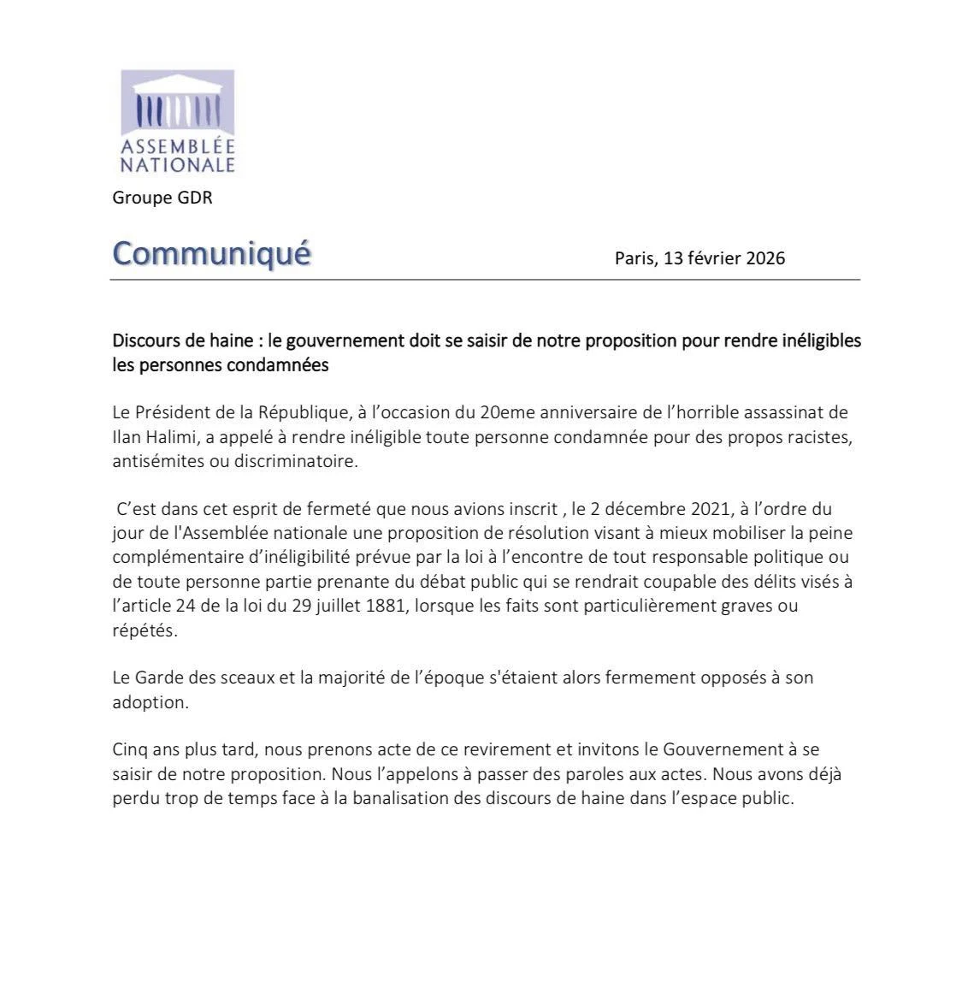

Publication relayée par le PCF 79
Les députés communistes rappellent leur proposition sur l’inéligibilité après une condamnation pour racisme
Date de mise à jour indiquée par Facebook · 17 février 2026
Texte de la publication · Les députés communistes
[Communiqué] Le Président de la République a appelé à rendre inéligible toute personne condamnée pour racisme ou antisémitisme.
Nous invitons le Gouvernement à se saisir de notre proposition de 2021, écartée par la majorité de l’époque, pour passer des paroles aux actes.

Sources
Les députés communistes · publication relayée par le PCF 79 · bibliothèque Facebook · AR-0002-FB-00866
À lire aussi · Face au budget d’austérité, le PCF propose un pacte d’avenir